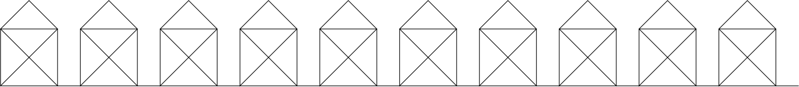

V těchto projektech je určitě něco nového. Nezadávají postup, jak na odpověď přijít, ale to určitě zvládneš!
-
Co vrací funkce
range? -
Co se stane, když pro příkaz
forzavoláš funkcirangese dvěma parametry? -
Se třemi?
Želví kreslení! Tahle sekce tě naučí myslet jako programátorka počítačové grafiky. Je dobré jednotlivé projekty dělat postupně, a když něco začne fungovat, znovu si řešení projít a zamyslet se nad ním.
-
Nakresli trojúhelník.
Poznámka: Rovnostranný trojúhelník má vnitřní úhly 60°. Želva se ale otáčí o vedlejší úhel 180 - 60 = 120°.

-
Nakresli domeček!

Jak pravil Pythagoras, délka šikmé čáry v domečku je √2-krát délka stěny. O funkci na odmocninu jsme mluvili na srazu.
-
Nakresli vesnici!

-
Nakresli pětiúhelník, šestiúhelník, sedmiúhelník, osmiúhelník.

Vnitřní úhel pravidelného n-úhelníka má 180 × (1 - 2/n) stupňů.
Aby byly tvary zhruba stejně veliké, použij pro n-úhelník délku strany např. 200/n
-
Nakresli n-úhelník, kde n zadá uživatel.
-
Želva umí jen rovné čáry. Jde pomocí rovných čar nakreslit kolečko?
Nevíš-li, přeskoč na další projekt a pak se sem vrať.
-
Nakresli pětadevadesátiúhelník.
-
Nakresli takovýto ornament:

Nevíš-li si rady, vezmi pravítko a změř délky jednotlivých čar. Doporučuju začít od středu.
-
Nakresli takovýto ornament:
-
Nakresli spirálu.
Od ornamentů ke spirále se dostaneš stejným způsobem jako od
n-úhelníků ke kolečku. -
Napiš obrázek! Třeba les ze stromů, město z domů, nebe z hvězd, dav ze smajlíků, hradbu z věží, zikkurat ze schodů, ...
Můžeš použít i nějakou z funkcí modulu
random.
Další projekty jsou pro opravdové grafické mistryně. Nepouštěj se do nich, dokud nemáš hotové ostatní projekty. Nedostaneš-li se k nim, nevadí
-
Na sraze jsme nakreslili tři čtverce, každý otočený o 20°. Nakresli 18 takových čtverců.
-
Vezmi program z minulé úlohy a dokresli stonek a listy. Je jenom na tobě, jaký budou mít tvar. Piš komentáře a snaž se opakovat pomocí
for, ne pomocí Ctrl+C Ctrl+V.
A až tě omrzí grafika, zkus zase naprogramovat něco v textovém režimu.
-
Napiš program, který postupně načte od uživatele dvě čísla a jednoznakový řetězec – buď
'+','-','*'nebo'/'. Program provede na číslech příslušnou operaci.Příklad použití programu:
První číslo: 123 Druhé číslo: 456 Operace: + 123 + 456 = 579 -
Napiš program, který se pětkrát zeptá na číslo a nejmenší zadané číslo vypíše.
Nevíš-li si rady, podívej se do materiálů na sekci Přepisování proměnných. Místo sečítání budeš vybírat správnou hodnotu.